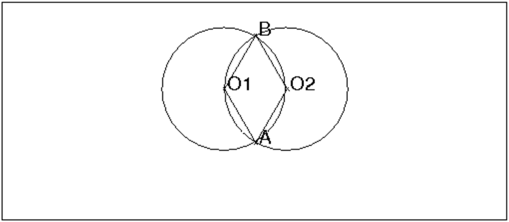
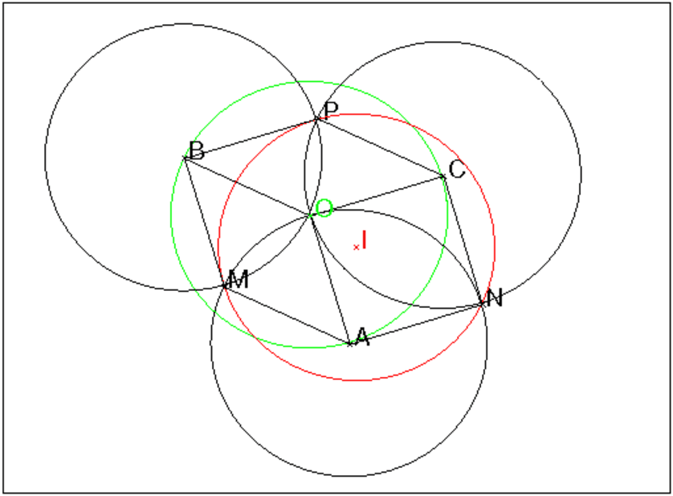
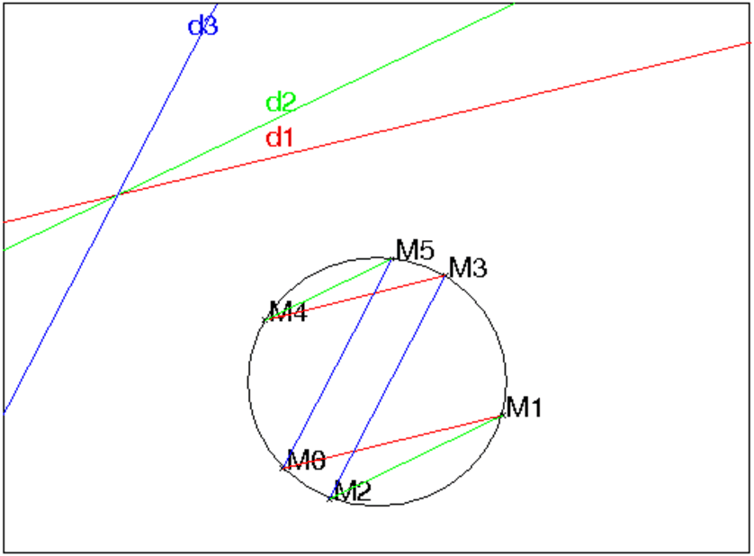
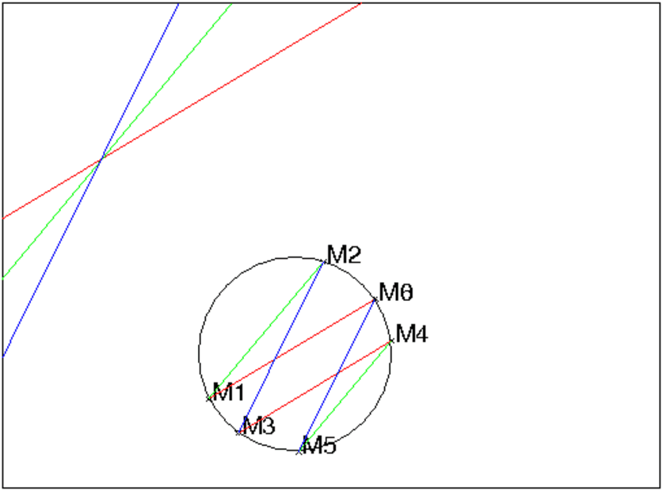
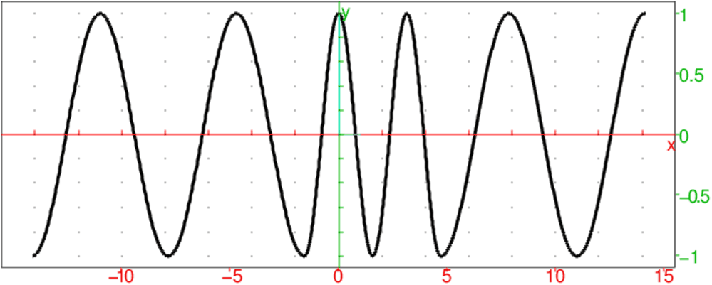
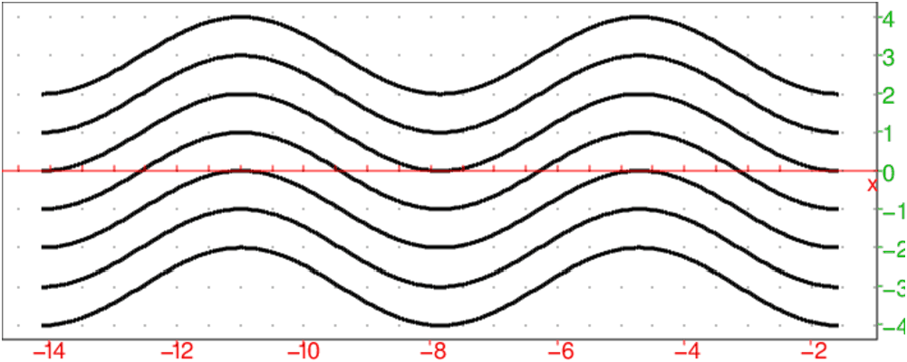

Étant donné 3 points A,B,C, construire un triangle
E,F,G tel que A soit le milieu de EF,
B soit le milieu de FG et C soit le milieu de
GE.
Avec Xcas, faisons des essais :
On clique sur 4 points A,B,C,E puis on tape :
F:=symetrie(A,E); G:=symetrie(B,F); H:=symetrie(C,G); polygone(A,B,C); polygone_ouvert(E,F,G,H);
On fait bouger ensuite le point E pour que E et H coincident.
On analyse alors la figure :
Lorsque E et H coincident EG est parallèle à AB et
le vecteur CE est égal au vecteur BA (propriété des milieux
d’un triangle).
On en déduit la construction avec Xcas :
On clique sur 3 points A,B,C puis on tape :
E:=translation(A-B,C); F:=symetrie(A,E); G:=symetrie(B,F);
Étant donné 4 points A,B,C,D, construire un quadrilatère
E,F,G,H tel que A soit le milieu de EF,
B soit le milieu de FG, C soit le milieu de GH,
D soit le milieu de HE.
Avec Xcas, faisons des essais :
On clique sur 5 points A,B,C,D,E (il faut renommer les points car D
n’est pas attribué automatiquement car en Maple D désigne la
dérivation).
F:=symetrie(A,E); G:=symetrie(B,F); H:=symetrie(C,G); I:=symetrie(D,H); polygone(A,B,C,D); polygone_ouvert(E,F,G,H,I);
On fait bouger ensuite le point E pour que E et I coincident.
Mais, cette fois on n’y arrive pas ....On modifie le point
A pour que E et I coincident. On analyse alors la figure :
Lorsque E et I coincident ABCD est un parallèlogramme
(on a 2AB=EG et 2DC=IG donc si E et I coincident on a AB=DC).
Lorsque ABCD est un parallèlogramme, on remarque alors que si on
fait bouger le point E, on a toujours E et I en coincidence.
En effet on a :
2AB=EG et 2DC=IG donc si AB=DC, on a
EG=IG donc E et I coincident.
Dans le cas du triangle, lorsqu’on fait subir au point E, 3 symétries centrales successives S1,S2,S3 on veut retrouver E : cela signifie que E doit être un point fixe de S3 ∘ S2 ∘ S1.
Dans le cas du quadrilatère, lorsqu’on fait subir au point E, 4 symétries centrales successives S1,S2,S3,S4 on veut retrouver E : cela signifie que E doit être un point fixe de S4 ∘ S3 ∘ S2 ∘ S1. On est donc amené à comprendre comment on compse des symétries centrales.
On désigne par SO la symétrie de centre O et par
TAB la translation de vecteur AB.
Théorème
Soient deux points O1 et O2 et un vecteur V, on a :
En effet,
Étant donné 5 points A,B,C,D,E, construire un pentagone
A1,A2,A3,A4,A5 tel que A soit le milieu de A1A2,
B soit le milieu de A2A3,....,E soit le milieu de
A5A1.
La construction du pentagone revient à déterminer A1 tel que :
SA1=SE∘ SD∘ SC∘ SB∘ SA, puis à construire les points
A2=SA(A1), A3=SB(A2)....
On a d’après le théorème précédent :
SB∘ SA=T2AB
SD∘ SC=T2CD
donc
SD∘ SC∘ SB∘ SA=T2(AB+CD) et
SE∘ SD∘ SC∘ SB∘ SA=SE∘T2(AB+CD)=
SA1 avec EA1=BA+DC
La construction avec Xcas .
On clique sur 5 points A,B,C,D,E (il faut renommer les points car D
n’est pas attribué automatiquement car en Maple D désigne la
dérivation).
polygone(A,B,C,D,E); A1:=translation(A-B+C-D,E); A2:=symetrie(A,A1); A3:=symetrie(B,A2); A4:=symetrie(C,A3); A5:=symetrie(D,A4); F:=symetrie(E,A5):; polygone_ouvert(A1,A2,A3,A4,A5,F); A1==F;
La réponse de A1==F est 1 ce qui signifie que la construction est correcte.
La construction d’un polygône ayant un nombre impair de côtés à partir des milieux de ses côtés est possible puisque le produit d’un nombre impair de symétries centrales est une symétrie centrale.
Soient 3 cercles CA,CB,CC de centre A,B,C de même rayon R
et ayant un point commun O (on a donc les trois centres A,B,C
sont sur un cercle de centre O et de rayon R).
Soient :
alors, les trois points
M,N,P sont sur un cercle de rayon R.
Lemme
Si deux cercles de même rayon R et de centre O1 et O2 se coupent en
A e B alors le quadrilatère O1,A,O2,B est un losange.

En effet on a O1A=O1B=O2A=O2B=R.
Démonstration
D’après le lemme les quadrilatères :
O,B,M,A,
O,A,N,C, et
O,C,P,B
sont des losanges.
La translation de vecteur OA transforme
BC en MN.
La translation de vecteur OB transforme
AC en MP.
La translation de vecteur OC transforme
AB en NP.
Les triangles M,N,P et B,C,A sont donc égaux.
Donc le rayon R du cercle circonscrit à B,C,A est égal au rayon du
cercle circonscrit à M,N,P.
On va aussi montrer que le centre I de ce cercle est tel que
AI= OP et que
c’est aussi l’orthocentre du triangle ABC.

On a en effet :
Soit AI= OP
On a PI= OA= CN et
PC=CN donc
PINC est un losange et donc IC est la médiatrice de PN.
de même PI= OA= BM et
PB=BM donc
PIMB est un losange et donc IB est la médiatrice de PM.
Donc I est le point de concours des médiatrice de MNP c’est donc le
centre du cercle circonscrit à MNP.
Puisque OP est la médiatrice de BC donc AI est la médiatrice de
MN (car la translation de vecteur 0A transforme B en M, C en N P en I et O en A).
Donc la médiatrice de MN passe par A puisque MA=AN et elle est
perpendiculaire à BC puisque BC et MN sont parallèles. donc la
médiatrice de MN est la hauteur issue de A du triangle ABC.
De même la médiatrice de MP passe par B puisque MB=BP et elle est
perpendiculaire à AC puisque AC et MP sont parallèles. donc la
médiatrice de MP est la hauteur issue de B du triangle ABC.
donc le centre du cercle circonscrit à MNP est l’orthocenntre du triangle
ABC.
Démonstration avec Xcas
On tape :
O:=point(0); U:=cercle(O,1):;U; supposons(a=[0.3,-5,5,0.1]); A:=point(cos(a)+(i)*sin(a)); supposons(b=[2.4,-5,5,0.1]); B:=point(cos(b)+i*sin(b)); C1:=cercle(A,1):;C1; C2:=cercle(B,1):;C2; M:=normal(symetrie(droite(A,B),O)); supposons(c=[-1.6,-5,5,0.1]); C:=point(cos(c)+(i)*sin(c)); C3:=cercle(C,1):;C3; N:=normal(symetrie(droite(A,C),O)); P:=normal(symetrie(droite(B,C),O)); U1:=circonscrit(M,N,P):; affichage(U1,1); affichage(circonscrit(A,B,C),2); I:=orthocentre(A,B,C); U2:=cercle(I,1):; affichage(U2,4);
Xcas peut prouver que le cercle U1 est le cercle U2 de
centre I (orthocentre de ABC ou point vérifiant
AI= OP) et de rayon 1 car tous les calculs
sont faits en utilisant les paramètre formels a,b,c.
On tape :
tsimplify(centre(U1)-I)
On obtient :
0
On tape :
J:=translation(P-O,A)
tsimplify(centre(U1)-J)
On obtient :
0
On tape :
tsimplify(rayon(U1))
On obtient :
1
Remarque
On remarque que les calculs sont longs :
pour le cercle U1:=circonscrit(M,N,P):; (Evaluation time: 2.74)
pour tsimplify(centre(U1)-I) (Evaluation time: 0.54)
pour ttsimplify(rayon(U1)) (Evaluation time: 1.12)
On peut amĺioer le temps de calcul !!!!
En effet lorsque vous voulez faire faire une démonstration géométrique
par Xcas, il est important de réduire au maximum les paramètres
formels sans perte de généralités bien sûr !
Par exemple, ici, on peut supposer que a vaut 1 et donc que A se
trouve sur U et sur l’axe des x (cette disposition n’est pas un cas
particulier car on a le choix du repère).
On tape :
O:=point(0); U:=cercle(O,1):;U; A:=point(1); supposons(b=[2.4,-5,5,0.1]); B:=point(cos(b)+i*sin(b)); C1:=cercle(A,1):;C1; C2:=cercle(B,1):;C2; M:=normal(symetrie(droite(A,B),O)); supposons(c=[-1.6,-5,5,0.1]); C:=point(cos(c)+(i)*sin(c)); C3:=cercle(C,1):;C3; N:=normal(symetrie(droite(A,C),O)); P:=normal(symetrie(droite(B,C),O)); U1:=circonscrit(M,N,P):; affichage(U1,1); affichage(circonscrit(A,B,C),2); I:=orthocentre(A,B,C); U2:=cercle(I,1):; affichage(U2,4);
On a alors :
pour le cercle U1:=circonscrit(M,N,P):; (Evaluation time: 0.92)
et ensuite tsimplify(centre(U1)-I) et ttsimplify(rayon(U1)) sont
instantanés.
On se donne trois directions d1,d2,d3 et un cercle C de centre O et de
rayon R et un point M0 sur ce cercle.
On consid‘ere la suite des points :
M1 est le point de C tel que M0M1 a pour direction d1,
M2 est le point de C tel que M1M2 a pour direction d2,
M3 est le point de C tel que M2M3 a pour direction d3,
M4 est le point de C tel que M3M4 a pour direction d1,
M5 est le point de C tel que M4M5 a pour direction d2,
M6 est le point de C tel que M5M6 a pour direction d3,
Montrer que M6=M0.

Démonstration
Soient Δ1,Δ2,Δ3 3 droites passant par O et ayant comme
directions, les directions perpendiculaires à
d1,d2,d3. Soient S−1,S2,S3 les 3 symétries droites d’axe
Δ1,Δ2,Δ3.
On a :
M1=S1(M0),
M2=S2(M1),
M3=S3(M2),
M4=S1(M3),
M5=S2(M4),
M6=S3(M5)=S3∘ S2∘ S1∘ S3∘ S2∘ S1(M0)
on sait que :
le produit des 2 symétries S2∘ S1 est une rotation de
centre 0 et d’angle 2(Δ1,Δ2).
le produit des 2 symétries S1∘ S3 est une rotation de
centre 0 et d’angle 2(Δ3,Δ1).
le produit des 2 symétries S3∘ S2 est une rotation de
centre 0 et d’angle 2(Δ2,Δ3).
Donc S3∘ S2∘ S1∘ S3∘ S2∘ S1 est une rotation de centre O et d’angle :
2(Δ1,Δ2)+2(Δ3,Δ1)+2(Δ2,Δ3)=0 mod2π.
Donc S3∘ S2∘ S1∘ S3∘ S2∘ S1 est l’identité.
Démonstration avec Xcas
On tape :
supposons(a=[0.6,-5,5,0.1]); supposons(b=[1.2,-5,5,0.1]); supposons(c=[2.0,-5,5,0.1]); d1:=droite(y=2+a*(x+2), affichage=1); d2:=droite(y=2+b*(x+2), affichage=2); d3:=droite(y=2+c*(x+2), affichage=4); C:=cercle(0,1):;C; supposons(d=[0.6,-5,5,0.1]); M0:=point(exp((i)*d)); M1:=symetrie(droite(y=-x/a), M0); M2:=symetrie(droite(y=-x/b), M1); M3:=symetrie(droite(y=-x/c), M2); M4:=symetrie(droite(y=-x/a), M3); M5:=symetrie(droite(y=-x/b), M4); M6:=symetrie(droite(y=-x/c), M5); segment(M0,M1,affichage=1); segment(M2,M1,affichage=2); segment(M2,M3,affichage=4); segment(M3,M4,affichage=1); segment(M4,M5,affichage=2); segment(M5,M6,affichage=4);
On obtient :

On tape :
affixe(M0)==normal(affixe(M6))
On obtient :
1
On considère un triangle équilatèral ABC et un point M1 sur AB.
M1 se projette orthogonalement en H1 sur BC,
H1 se projette orthogonalement en K1 sur AC et
K1 se projette orthogonalement en M2 sur AB etc....
On obtient ainsi sur AB une suite de points Mn.
On pose AMn=xnAB.
Calculer xn et étudier la suite x.
On commence par faire la figure.
On écrit pour cela la suite d’instructions dans un niveau de géométrie :
A:=point(0);
B:=point(1);
C:=point(1/2+sqrt(3)*i/2);
triangle(A,B,C);
assume(a=[0.1,0,1]);
M:=element(segment(A,B),a);
L:=[normal(affixe(M))];
for (k:=1;k<=30;k:=k+3) {
L:=append(L,normal(affixe(projection(segment(B,C),L[k-1]))));
L:=append(L,normal(affixe(projection(segment(A,C),L[k]))));
L:=append(L,normal(affixe(projection(segment(B,A),L[k+1]))));
};
polygone_ouvert(L);
On obtient la figure dans l’écran de géométrie.
On rappelle que :
M:=element(segment(A,B),a) signifie que :
AM=aAB et 0 ≤ b ≤ 1.
On rappelle aussi que :
assume(a=[0.1,0,1]) signifie que :
la figure se fera avec a=0.1 mais que les calculs se feront avec le
paramètre formel a compris entre 0 et 1.
On régle la fenêtre graphique :
xyztrange(-0.1,2.0,-0.1,1.0,-10.0,10.0,-1.0,6.0,-0.1,2.0,
-0.146865136298,1.0,1,0.0,1.0)
On tape L dans une entrée de commande et on pbtient :
[a,((-i)*sqrt(3)+1)/4*a+((i)*sqrt(3)+3)/4,
((-i)*sqrt(3)-1)/8*a+((3*i)*sqrt(3)+3)/8,-a/8+3/8,....]
ce qui signifie que :
x1=a et x2=-a/8+3/8
Pour avoir la suite xn on tape :
Xn:=seq(L[k],k,0,30,3)
On trouve : x11=a/1073741824+357913941/1073741824
On tape :
evalf(357913941/1073741824)
On obtient:
0.333333333023
Il semble donc que cette suite converge vers N tel que AN=AB/3.
On calcule x2 en fonction de x1 :
on a AM1=x1AB
BH1=(1−x1)/2BC et CK1=(1−(1−x1)/2)/2CA=(1+x1)/4CA
AM2=(1−(1+x1)/4)/2AB=(3−x1)/8AB
La relation de récurrence est :
xn+1=(3−xn)/8
On cherche la limite l possible :
l=(3−l)/8 donc 8l=3−l soit l=3/9=1/3
La suite un=xn−1/3 est une suite géométrique de raison −1/8
puisque un+1=xn+1−1/3=(3−xn)/8−(3−l)/8=−un/8.
La suite un=xn−1/3 converge vers 0 donc la suite xn converge vers 1/3
On veut dessiner sur un même graphique la fonction dérivable qui vaut pour
a<b<c<d :
sin(x) sur [a,b],sin(2*x+α) sur [b,c] et sin(x)t sur [c,d]
en raccordant les graphes de sin(x) et de sin(2*x+α) en des
points où ils ont une même tangente horizontale. Il faut donc choisir
correctement b,c,α.
On tape par exemple :
sinusoide0():={
local L1,L2,L3,R,k;
L1:=plotfunc(sin(x),x=-9*pi/2..-pi/2,affichage=epaisseur_ligne_3);
L2:=plotfunc(sin(2*x+pi/2),x=-pi/2..3*pi/2,affichage=epaisseur_ligne_3);
L3:=plotfunc(sin(x),x=3*pi/2..9*pi/2,affichage=epaisseur_ligne_3);
R:=L1,L2,L3;
retourne R;
}:;
On tape : sinusoide0()
On obtient :

On veut tracer des translatés de ces graphes selon des vecteurs de direction
Oy.
On tape par exemple pour effectuer 7 translations sur la première sinusoide :
sinusoide1():={
local L,R,k;
L:=plotfunc(sin(x),x=-9*pi/2..-pi/2,affichage=epaisseur_ligne_3);
R:=(L+k*i)$(k=-3..3);
retourne R;
}:;
On tape : sinusoide1()
On obtient :

On tape par exemple pour effectuer 46 translations sur les 3 sinusoides:
sinusoide():={
local L1,L2,L3,R,k;
L1:=plotfunc(sin(x),x=-9*pi/2..-pi/2,affichage=epaisseur_ligne_3);
L2:=plotfunc(sin(2*x+pi/2),x=-pi/2..3*pi/2,affichage=epaisseur_ligne_3);
L3:=plotfunc(sin(x),x=3*pi/2..9*pi/2,affichage=epaisseur_ligne_3);
R:=(L1+k/4*i)$(k=-20..25),(L2+k/4*i)$(k=-20..25),(L3+k/4*i)$(k=-20..25);
retourne R;
}:;
On tape : sinusoide()
On obtient une sinusoide.
Soit a un entier positif. On veut étudier avec des graphiques la suite de
Syracuse définie par :
u0=a
un=un−1/2 si un−1 est pair et
un=3*un−1+1 si un−1 est impair.
Cette suite se termine toujours (?) par 1,4,2,1,4,2,1... mais on ne sait pas
le montrer.
Pour étudier cette suite on peut :
- utiliser le tableur en mettant dans A0 la valeur a de départ et
dans A1 la formule :
=ifte(irem(A0,2)==0,iquo(A0,2),3*A0+1) ou encore
=if ((irem(A0,2))==0) iquo(A0,2); else 1+3*A0;
- utiliser un programme syracuse qui renvoie le maximum de cette suite et
le nombre d’éléments de cette suite et syracuse0 qui écrit en
plus les termes de la suite ou encore syracuse100
qui renvoie le maximum, le nombre de termes et la valeur de départ de la
plus longue suite démarrant par un nombre entre 2 et 100.
syracuse(a):={
local k,m;
k:=0;
m:=a;
while (a!=1) {
if (irem(a,2)==0) a:=iquo(a,2);
else {
a:=a*3+1;
if (a>m){m:=a};
}
k:=k+1;
}
retourne m,k;
}:;
syracuse0(a):={
local m,k;
m:=a;
k:=0;
print(a);
while (irem(a,2)==0){
a:=iquo(a,2);
k:=k+1;
print(a);
}
while(a!=1){
a:=3*a+1;
k:=k+1;
print(a);
if (m<a) {m:=a;}
while (irem(a,2)==0){
a:=iquo(a,2);
k:=k+1;
print(a);
}
}
return(m,k);
};
syracuse100():={
local k,kn,kt,l,lt,m,mt;
lt:=0;
for (k:=2;k<101;k:=k+1){
kn:=k;
m:=k;
l:=0;
while (kn!=1) {
if (irem(kn,2)==0) kn:=iquo(kn,2);
else {
kn:=kn*3+1;
if (m<kn) {
m:=kn;
}
}
l:=l+1;
}
if (l>lt) {
mt:=m;lt:=l;kt:=k;
}
}
return(mt,lt,kt);
};
On ouvre un éditeur de programme, on recopie la procédure, puis grâce au
bouton OK le programme est validé.
On tape syracuse100(), on trouve :
9232,118,97 ce qui veut dire que c’est en démarrant avec 97 que la
suite a le plus de termes (ici 118 termes) et le maximum de cette suite est
9232.
On peut bien sûr modifier les paramètres de la boucle for en mettant
par exemple :
for (k:=101;k<200;k:=k+1)
On tape syracuse100(), on trouve alors :
250504,124,177
ou encore :
for (k:=901;k<1000;k:=k+1)
On tape syracuse100(), on trouve alors :
250504,173,937
On peut encore modifier facilement pour savoir si un plus grand nombre de
terme donne la plus grande valeur atteinte (cela semble vrai!!!) en changeant
pour cela :
if (l>lt) {mt:=m;lt:=l;kt:=k;} en
if (m>mt) {mt:=m;lt:=l;kt:=k;} et rajouter au début kt:=2;.
- utiliser un programme qui dessine les points (n,un) lorsqu’on donne en
entrée u0=a
- lorsqu’on donne en entrée u0=a et en notant n la première valeur de
k pour laquelle uk=1 et m le maximum des uk pour k≤ n, dessiner
les points a,m ou encore dessiner les points a,uk pour k=0..n.
On écrit la procédure syracuse1 (resp syracuse2) qui dessine
les points (k,uk) (resp les segments reliant les points (k,uk)) dans
l’écran de géométrie et la procédure syracuse3 qui
dessine les points a,uk pour k allant de 0 à n et cela pour a
allant de 2 à 100 :
syracuse1(a):={
local m,k;
m:=a;
k:=0;
point(0,a);
while (irem(a,2)==0){
a:=iquo(a,2);
k:=k+1;
point(k,a);
}
while(a!=1){
a:=3*a+1;
k:=k+1;
point(k,a);
if (m<a) {m:=a;}
while (irem(a,2)==0){
a:=iquo(a,2);
k:=k+1;
point(k,a);
}
}
return(m,k);
};
syracuse2(a):={
local m,k,k0,a0;
m:=a;
k:=0;
point(k,a);
while (irem(a,2)==0){
k0:=k;
a0:=a;
a:=iquo(a,2);
k:=k+1;
segment(k0+i*a0,k+i*a);
}
while(a!=1){
k0:=k;
a0:=a;
a:=3*a+1;
k:=k+1;
segment(k0+i*a0,k+i*a);
if (m<a) {m:=a;}
while (irem(a,2)==0){
k0:=k;
a0:=a;
a:=iquo(a,2);
k:=k+1;
segment(k0+i*a0,k+i*a);
}
}
return(m,k);
};
syracuse3():={
local k,kn;
for(k:=2;k<101;k:=k+1){
point(k,k);
kn:=k;
while (kn!=1) {
if (irem(kn,2)==0) kn:=iquo(kn,2); else kn:=kn*3+1;
point(k,kn);
}
}
};
Ne pas oubler de régler la fenêtre graphique en mettant par exemple :
X-=Y-=WX-=WY-=0, X+=WX+=100 et Y+=WY+=1000.
puis on tape par exemple syracuse1(123).
On dispose k jetons en p tas.
On construit la suite des tas de la façon suivante :
on prend un jeton dans chaque tas et tous ces jetons forment un nouveau tas qui
sera le dernier tas, et on recommence.
Ce qui est sûr c’est que cette suite de tas est pérodique puisque il n’y a
qu’un nombre fini de façons de disposer k jetons en tas.
Il s’agit de voir comment se comporte cette suite.
On peut montre que lorsque k=n*(n+1)/2 cette suite stationne en :
1,2,3,...,n.
Lemme La suite débutant par 1,2,3,...,n non ordonnè stationne
vers 1,2,3,...,n.
En effet, si on répartit les jetons en n tas 1,2,3,...,n de façon
non ordonnée, on
aura la suite ordonnée 1,2,3,...,n au bout d’au plus n−1 manipulations.
En effet à la première étape n se trouvera en dernier, à la
deuxième étape n−1,n se trouveront à la fin, et à la (n−1)-ième
étape 2, ...n−1,n se trouvera en dernier et on aura donc obtenu 1,2...n
puisque le nombre k de jetons vaut n(n−1)/2.
//programme de simulation tas.cxx
tas(l):={
local s,j,k,lr;
lr:=[l];
while (1) {
s:=size(l);
for (j:=0;j<s;j++) {
l[j]:=l[j]-1;
}
l:=concat(l,s);
//on supprime les zeros de l
k:=0;
for (j:=0;j<s+1;j++){
if (l[j]!=0){
l[k]:=l[j];
k:=k+1;
}
}
l:=mid(l,0,k);
if (member(l,lr)) return lr;
lr:=append(lr,l);
}
}
On tape :
tas([10])
On obtient :
[[10],[9,1],[8,2],[7,1,2],[6,1,3],[5,2,3],
[4,1,2,3],[3,1,2,4],[2,1,3,4],[1,2,3,4]]